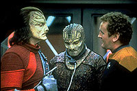
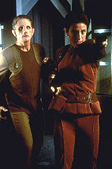
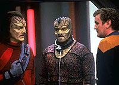

MANCHETE
DO EPISDIO
Histria lida com a
perspectiva de uma
cultura diferente com bom desempenho
Episdio
anterior | Prximo
episdio
Sinopse:
Data Estelar:
desconhecida.
Uma nave proveniente do quadrante Gama
pra em Deep Space Nine para reparos e o chefe
O'Brien designado para conduzir os trabalhos e fazer primeiro
contato com os aliengenas.
Por ocasio disso ele conhece Tosk, um ser com modo de vida
bastante excntrico pelos padres humanos.

Ao
tornar-se amigo do aliengena, O'Brien acaba descobrindo que ele
uma presa criada especialmente para um jogo de caa conduzido
pelos membros de sua espcie.
Quando os aliengenas chegam estao para capturar Tosk,
O'Brien desobedece Primeira Diretriz e ajuda a presa a escapar.
Comentrios:
"Captive Pursuit" mais uma anlise de uma
cultura supostamente brbara no melhor estilo de Jornada
nas Estrelas. interessante notar que no importa o
quo absurdo seja um costume para ns, para os que fazem parte
daquela cultura, tudo no s normal, como desejvel.

Assim,
para Tosk uma honra ser caado por seus colegas, por mais que
parea brbaro para os padres humanos.
O senso "aliengena" de Tosk e da "Caada",
enquanto no muito original, bem apresentado, com boa
execuo (o roteiro no cai no bvio truque do "tradutor
universal incapaz de lidar com a linguagem dos nativos do
quadrante Gama" e faz um bom trabalho em tratar
respeitosamente as crenas dos "caadores" e de Tosk).
A amizade de O'Brien e Tosk outro bom ponto (a excelente
maquiagem e a linguagem corporal de Scott MacDonald, que fornece
um toque de inocncia e um real senso de simpatia por Tosk mesmo
aps ele "fritar" uma meia dzia de
"caadores" em sua fuga).
O final em que Sisko permite que O'Brien ajude Tosk a escapar e
depois faz uma advertncia ao engenheiro aps o fato realizado
100% esprito de Jornada.
Citaes:
Tosk - "I am
sorry. I have no vices for you to exploit."
(Sinto muito. Eu no tenho vcios para o senhor explorar.)
Trivia:
 Episdio contou com a participao de Gerrit Graham (que
tambm pode ser visto interpretando um membro do Q-Continuum no
episdio "Deathwish" da segunda
temporada de Voyager) como o
"Caador".
Episdio contou com a participao de Gerrit Graham (que
tambm pode ser visto interpretando um membro do Q-Continuum no
episdio "Deathwish" da segunda
temporada de Voyager) como o
"Caador".
A nota imprensa fornecida pela Paramount lista Tim Burns e
Michael Piller como co-autores deste episdio.

Durante a srie muitos fs
especularam sobre a possibilidade da volta de Tosk e dos
"Caadores" e de sua possvel relao com o
Dominion. Os personagens nunca foram citados novamente durante a
srie, mas interessante comparar. Tosk criado
exclusivamente para ser a presa na caada e possui uma capacidade
natural de camuflagem. Os soldados Jem'Hadar so criados pelos
Fundadores exclusivamente para lutar e possuem tambm uma
capacidade natural de ocultamento.
Ficha
tcnica:
Histria de Jill Sherman
Donner
Roteiro de Jill Sherman Donner e Michael
Piller
Direo de Corey Allen
Exibido em 01/02/1993
Produo: 006
Elenco:
Avery Brooks como
Benjamin Lafayette Sisko
Ren Auberjonois como Odo
Nana Visitor como Kira Nerys
Colm Meaney como Miles Edward O'Brien
Siddig El Fadil como Julian Subatoi Bashir
Armin Shimerman como Quark
Terry Farrell como Jadzia Dax
Cirroc Lofton como Jake Sisko
Elenco convidado:
Gerrit Graham como "o Caador"
Scott MacDonald como Tosk
Kelly Curtis como miss Sarda (Garota de Dabo)